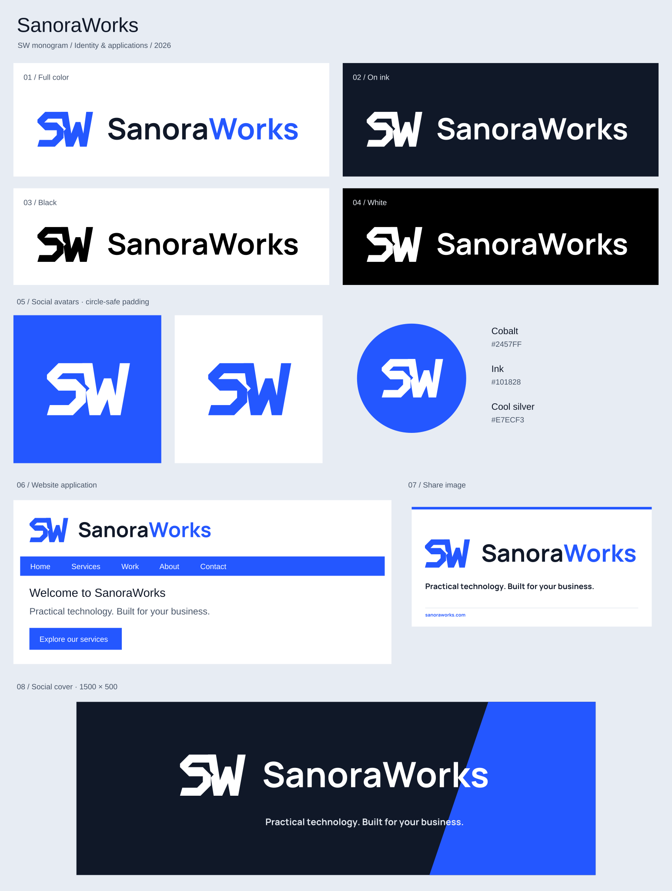

<!doctype html>
<html lang="en"><meta charset="utf-8"><meta name="viewport" content="width=device-width, initial-scale=1"><title>SanoraWorks brand kit</title>
<style>body{margin:0;background:#E7ECF3;color:#101828;font:16px/1.7 system-ui,sans-serif}main{max-width:1200px;margin:auto;padding:32px 20px}h1{margin:0 0 8px;font-size:32px}a{color:#2457FF;text-underline-offset:4px}a:focus-visible{outline:3px solid #101828;outline-offset:4px}.download{display:inline-block;background:#2457FF;color:white;padding:12px 20px;margin:12px 0 24px}img{width:100%;height:auto;display:block}nav{display:flex;flex-wrap:wrap;gap:12px 24px;margin-bottom:24px}p{max-width:68ch}</style>
<main><h1>SanoraWorks brand kit</h1><p>Original SW monogram and outlined wordmark. Cobalt, ink, cool silver, and white.</p><a class="download" href="sanoraworks-brand-kit.zip" download>Download the brand kit ZIP</a><nav aria-label="Brand resources"><a href="README.md">Usage and spacing</a><a href="sanoraworks-monogram.svg">Monogram SVG</a><a href="sanoraworks-horizontal.svg">Horizontal SVG</a><a href="sanoraworks-stacked.svg">Stacked SVG</a><a href="sanoraworks-preview.png">Preview PNG</a><a href="/">Website</a></nav></main></html>
